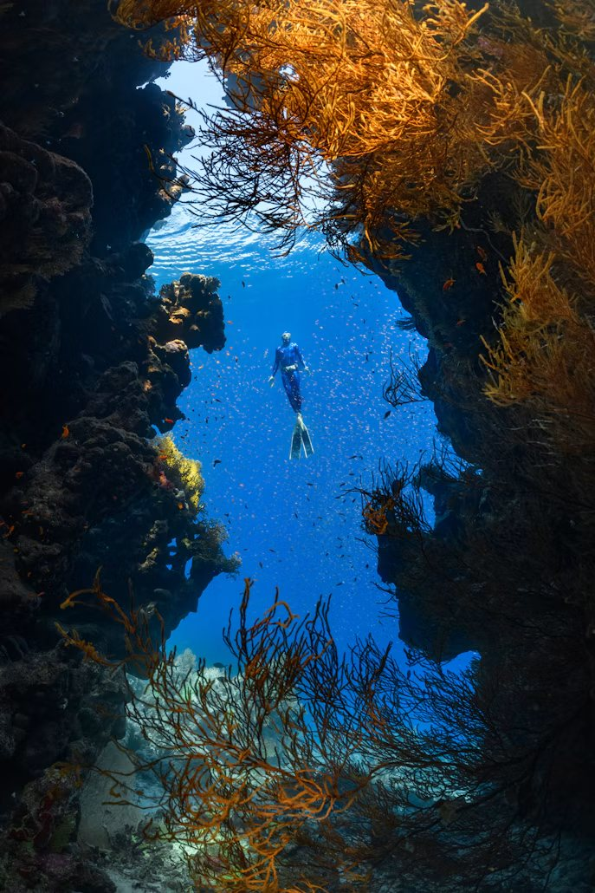
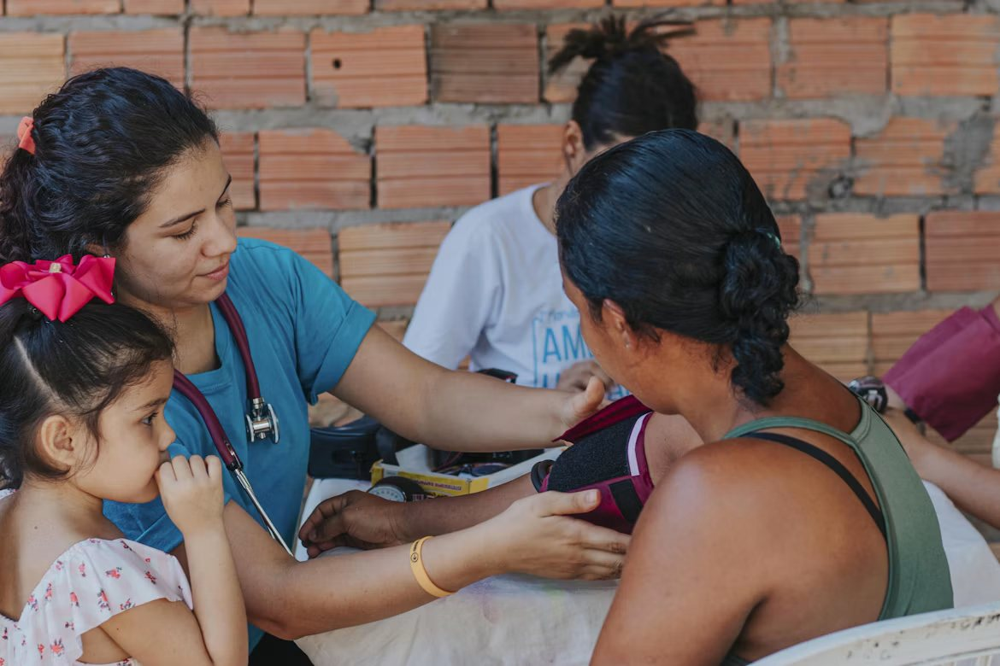
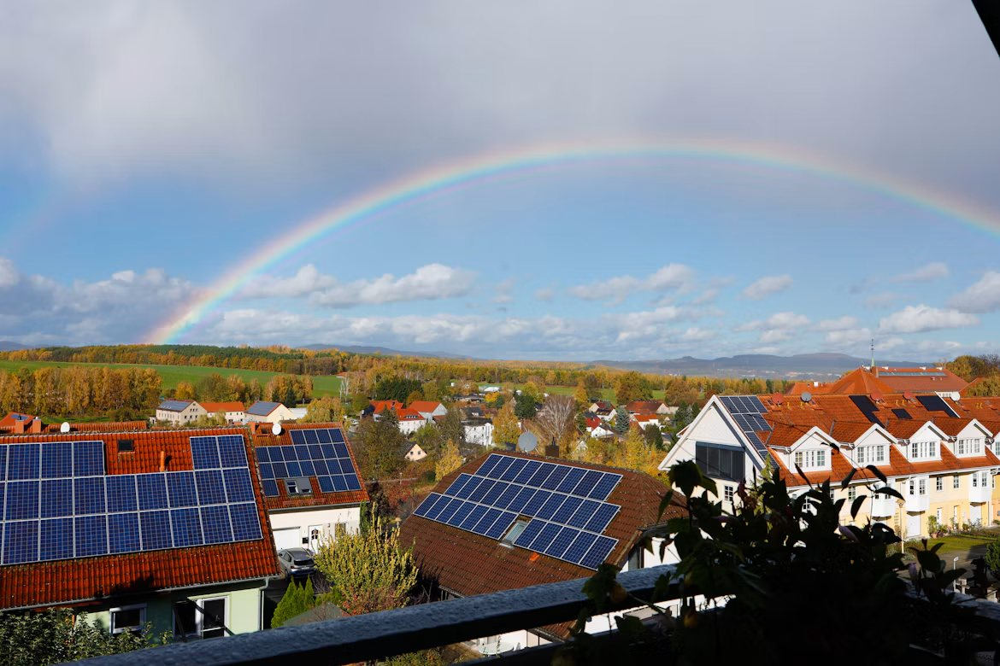
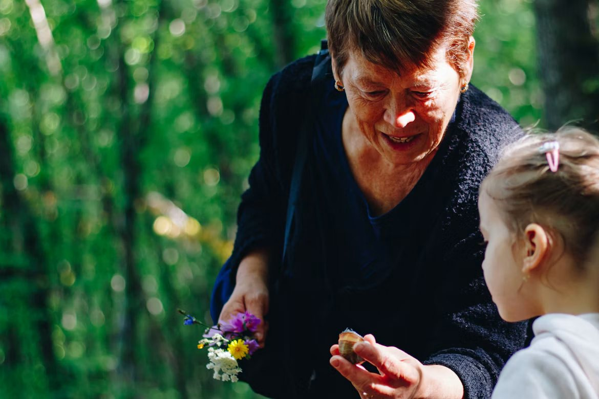
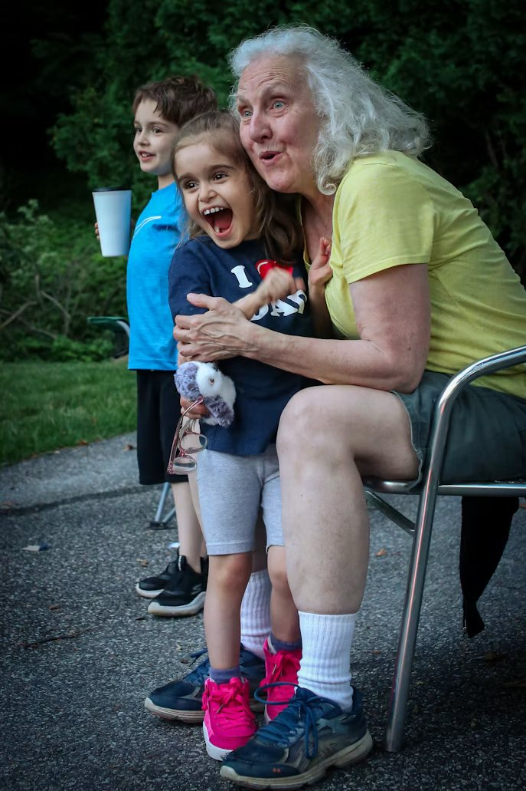
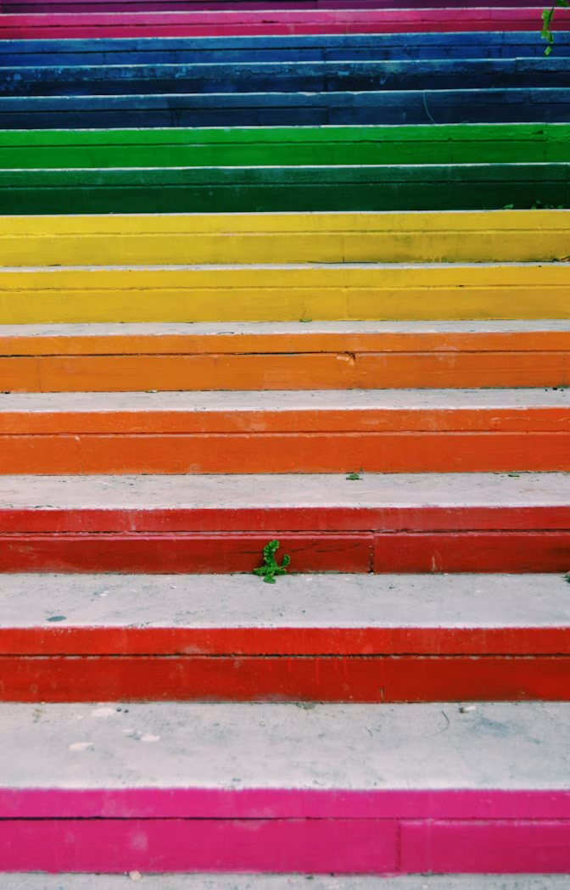

Forskere melder om nye, friske kolonier etter år med bleking.

Godkjent for bruk i flere land. Dette betyr det for barna som får den.

Hva som er nytt, hva som gjenstår — og når det kan nå hustakene.


